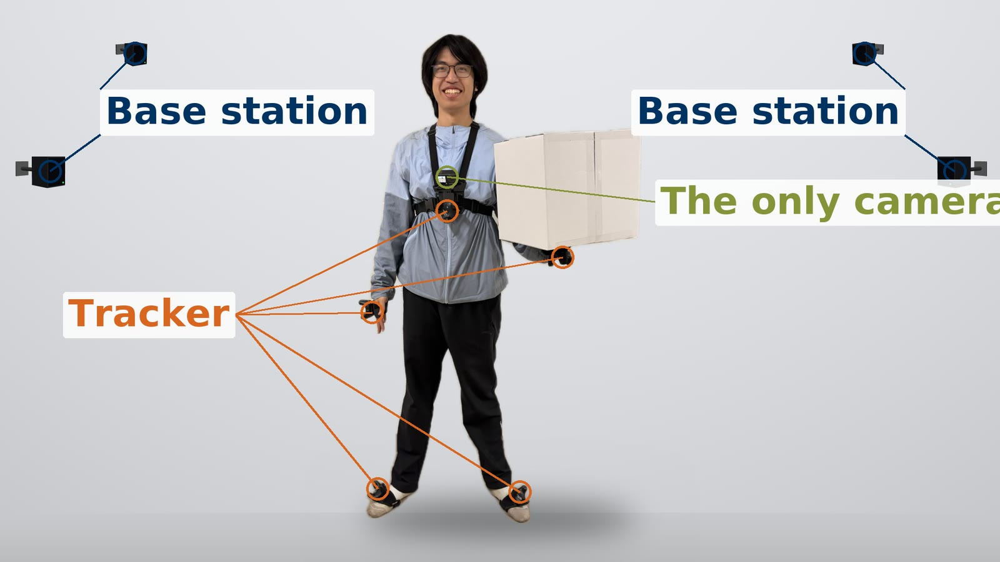

Workhorse: Learning Robust Whole‑Body Humanoid Loco‑Manipulation from Human Data
1Affiliation withheld · 2Affiliation withheld
Abstract
Humanoid robots have made impressive progress in locomotion and loco-manipulation, yet they remain constrained in tasks that demand contact-rich whole-body manipulation. In these scenarios, the robot may simultaneously engage its hands, torso and feet to make contact with the environment; and may even construct or modify the terrain it subsequently traverses. To address this, we present Workhorse, a hierarchical framework that learns such behavior from human demonstrations alone, with a visual planner and a reinforcement-learning whole-body tracker. The planner predicts target five body-link poses from only egocentric RGB perception, while the tracker robustly and accurately realizes those commands on the robot. The two are decoupled, each trained separately on that shared target straight from the data, and each trained against a deliberate imitation of the other's mistakes. Together, these enable long-horizon, dynamic and reactive loco-manipulation requiring whole-body contact, under external perturbations.
Human data

The setup. Five wearable trackers — chest, both hands, both feet — and one chest camera. Nothing on the head, no markers on the objects.
What is recorded. The five tracker poses at 60 Hz and the camera's own video, put on one clock by the claps at the start of the take.
From human to humanoid
Alignment
Whole-body tracker
The whole-body tracker follows those same five targets, here in simulation. Only the mount offsets were remeasured.
Visual planner
Tricks
Whole-body tracker
Visual planner
Deployment
Capability
Three tasks on the real G1, every take the full visuomotor policy: the robot acts on its own camera and its own proprioception, with no motion capture, no teleoperation and no scripted step. They span long-horizon autonomy, contact-rich interaction, recovery under perturbation and reactive behaviour. Each task has its own planner and its own tracker; the interface, the training recipe and the deployment stack are shared.
Simulation evaluation
To test a policy before it goes on the robot, we scan the room into a Gaussian splat and evaluate there. Closing the appearance gap needs a little simulator data mixed into the human data — about 15% of the planner's training set, and only for this.
Success rate on box transport and stacking, 100 episodes each. G1: 77%. H2: 83%.